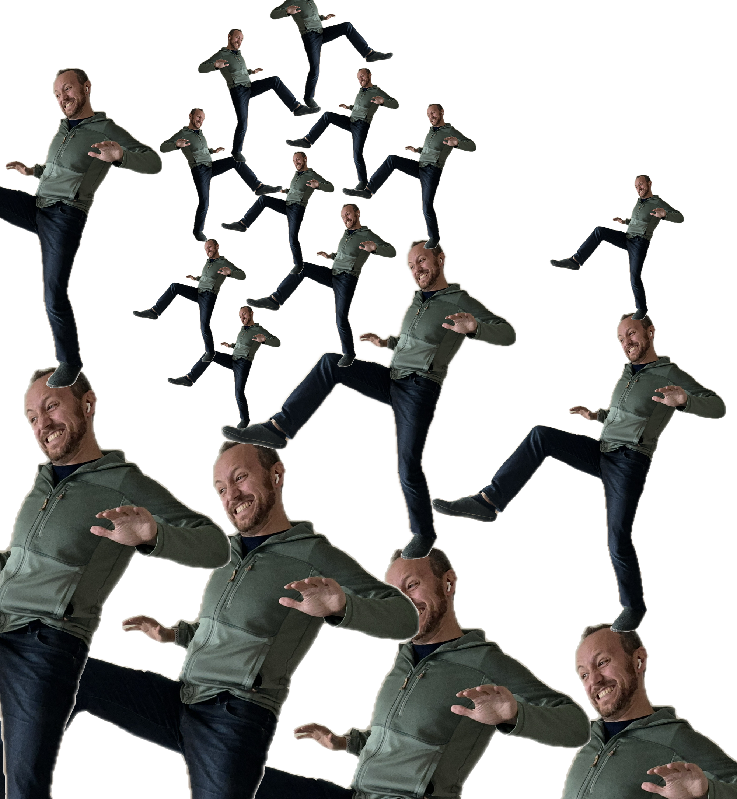

The Protocol Seeking Protocol

As my contribution to "Onchain: A Farcaster experiment in long-form content", I made a commitment to write some thoughts on a topic I'd wanted to, and for that commitment, I said I wanted to write about a protocol for finding protocols. I had in mind the Summer of Protocols work, which has been some of my favorite blogging lately, and especially the Search for Hardness, and its inspiration, Atoms, Institutions, Blockchains.
When I read those articles, I started to see some of my own work in a new light, and particularly I started to see the relationship between a few concepts come together in a more clear way than they had before, and so I'd like to try re-articulating this idea with you, with this fresh frame.
Some readers might hope that I would blog a bit on the current state of MetaMask, and where we're heading. In a way, this article will do that, but by discussing the fundamental issues at a deeper level than a current review of the state of the art.
As a brief summary of my understanding of hardness & protocols as those articles describe: Josh Stark has noticed that blockchain rooted value seems to have helped put a sort of light on a certain social concept that he calls "hardness", which would be something like the reliable parts of society that one can build on and ideally take for granted. Venkatesh Rao in his following article then suggests that the study of protocols is the study of the kind of hardness that Stark describes.
I'd like to share a synthesis of some ideas I've been working on, and frame it as a generalized set of protocol tools for the pursuit of hardness (not the creation of protocols or hardness itself). I hope you'll find the assumptions and reasoning that builds this model make intuitive sense, and I hope to then take that framework, apply its lens to a few things, and show that despite the compelling and simple logic that it is built with, it has some counterintuitive lessons to teach, including some with significant implications, for example about ideal computer system architectures that don't currently exist.
Moment of Zen, a Dose of Reality
Before we continue, here are a couple assumptions that all of this will build on:
- We don't know anything for sure.
- No risk, no reward.
You don't know anything: We may discover a new material that seems very hard, but it might be able to take only one gram more. A new longevity protocol is only proven to keep people alive as long as it has so far. You could be in a simulation after all, yadda yadda.
You can't benefit from an opportunity without taking it. A cutting edge longevity drug won't keep you alive if you don't take it, but it could poison you. You can't win the lottery without a ticket. You can't make a new friend without meeting a stranger (who might be a murderous stalker). Each of these is just one simple positive result, with a possible risk that might come with it.
What does this have to do with protocols, and hardness? Protocols rely on hardness to operate, but finding new sources of hardness is itself a risky endeavor: Trying a new system risks that it fails under your conditions. We may call Bitcoin hard now, but for its first several years, most people wouldn't have even known how to evaluate that claim. We can't have reliable protocols for any purpose unless we can establish paths of credible hardness, and any new source of hardness that could be a opportunity itself introduces new risk. So the pursuit of hardness is like the process of mining risk for reward. Protocols can then be built on top of those new sources of hardness, and just maybe provide some hardness for others to build on.
When trying to build social arrangements, the same thing applies. We are seeking hardness, but let's not lose touch with the reality that no matter how many fail-safes and layers of safety we add, we are that many failures plus one away from the hardness letting us down.
The same applies to digital systems: We are seeking reliability, but while we can add cryptography and resilience, we depend on a software and hardware supply chain and human reviews of the protocols proving properties that mere mortals selected. The most carefully crafted digital system is still riddled with opportunities for surprise.
Taking Baby Steps
I'll use "baby step" as a term for the kind of cautious, tenuous stepping I'm portrayed taking in the cover image (yes, I photoshopped it myself, because I was unable to prompt an AI to give me what I had in mind).
Baby steps are size invariant: Babies take careful steps, but multinational corporations also make cautious seed investments in unproven technologies that they hope will enable new foundations for their business. They also apply to choosing a software stack, or a protocol to operate an organization on, and so as promised, even protocol selection is prone to this protocol.
Baby steps are transitive: As you choose to depend on a system, you inherit all the hardness it rests on. It's risks all the way down to the ground, and who knows what it rests on.

This fundamental transitivity property is important: When you walk on the street you don't get to say "except if there's a sinkhole under it". When you share an email you don't get to say "but you can't share it" (sorry, DRM advocates)! It's just a law of nature. If we accept the fundamental transitivity of trust and risk, we can save time fighting against reality, and we might just find some valuable ways of improving our own protocols as well.
When you take the size-invariance and transitivity of baby steps together, this means baby steps are a good candidate for inductive, graph-theory type proofs: A step is always about an agent moving between two positions, and so an arbitrarily large graph can be reduced to that transitional node pair.
To demonstrate how baby steps are friendly to inductive proofs, consider this proof that baby steps advance forward:
- Base Case: A baby can stand stably
- Inductive step: A stably standing baby can very carefully extend its foot to ground that seems safe, and transfer its weight to the new foot, finding a new stable standing position.
Since a stable standing baby can take a step that leaves them standing stably, this forms an inductive proof that can imply an indefinitely long walk. That is, within the bounds that each step was up to the baby's judgment to take. You can't teach a kid to walk without having the chance to fall. Each step is a risk, too.
Hence the cautious step style: The baby step game is about how to make the most progress without taking the wrong risk.
This gives us the base elements of pursuing hardness:
- Accept you will be engaged in minimizing risk for pursuing new rewards.
- Minimize the risk of exploring new opportunities, so you can explore more opportunities.
- Accept that trust and risk are transitive.
Tools for Limiting Risk
There are countless ways of limiting risk, but I'll just describe three broad categories that many things seem to fit in: Reduction, Revocation, & Recommendation. Hey, three Rs! Maybe that'll stick!
Reduction (also known as attenuation) means making smaller, more calculated risks. What does it cost to validate an idea, or test a theory? How can you bring that cost down? Using PayPal or Apple Pay instead of entering your credit card into each new website makes it safer to interact with more third party sites. A valet key only lets the driver park the car, not into the trunk or glove box (where you might keep valuables). Is there a circuit breaker on this outlet? A key card on a schedule?
Revocation means being able to take back a decision. Ideally quickly and responsively. If you subscribed to a bad subscription box, how hard is it to cancel? If you elected a corrupt politician, what is the cost to reverse the result? Can you unplug the device if it sets on fire? Can you reverse the transaction?
Recommendation is whether someone you trust endorses the thing. Also known as "vouching". Did a friend say this works well? Endorsements are such a sound foundation for taking risks that you can skip the middle-man, and just hand money to a friend. As long as they value your relationship more than the amount at risk, you're provably safe. This can be dangerous if misused (like trusting strangers that don't have any incentive for your well-being), but can also be extremely powerful.
Scaling Risk Taking: Delegation
If taking recommendations is so safe that we can literally hand money to a friend, you might already notice that every kind of risk taking also has similarities to delegation. In some ways, delegation is just a word for relying on something else, and is no different from any other kind of reliance or risk taking.
However, I want to establish a slight distinction for my definition of delegation: A delegation is a nonexclusive ability to consume a resource. A few examples would be two people with keys to the same car. Two people on the same bank account. Two people with push rights to the same git remote. When you delegate someone the right to do something, you do not necessarily lose the ability to do it yourself.
A delegation may be revoked by either party (equivalent to consuming the resource yourself, or driving off with the car).
In web3, the most common type of delegation is the token allowance, which has become the most common way to connect a wallet to an application in a functional way (besides just "proving you hold this key"). It is the foundation of performing any swap, trade, wrap, or bridge. None of those functionalities can perform their roles without access to some funds, and so there will always be a mechanism for some risk to be taken. A way of Reducing that risk further would be to grant allowances with outcomes that are expected (simulation) or enforced ("offer safety", or "intents").
The key insight of delegation is that by being non-exclusive, it expands the number of agents capable of providing the service. As before, the safety proof relies on expanding the risk only to trustworthy agents, but given that assumption, delegation shares burden, can add resilience, and has a potential for adding minimal risk.
The top objection I get when advocating delegation as a major fundamental tool for expanding the ability to take risks is from people who think they can reduce risk by reducing how widely a recipient of some capability can share it. That's why I established early in this essay that trust is inherently transitive, and that if we can give up fighting against it, we can yield some benefits. This is a concrete benefit that we can strive for in our systems, if we can just stop fighting against it.
A very accessible metaphor for the deep power of delegation is email. It's well established at this point that "information wants to be free", and that's a property of how inherently sharable information is: You can trivially copy some information and share it with someone else. You can share your family's secret recipe, and the other person now has the power to create that recipe. They can cover for you at a potluck, but they could also dilute your recipe's value by publishing it online, or taking it to mass production.
How about those three Rs? While you can Reduce (redact) a message you send to someone, and you can Recommend they read it (retweet/sharing links), you can't Revoke a message you've shared. Information just happens to be irrevocable. Not all the tools can be used in all contexts, but it's nice to review how many apply :).
Information can also convey hard power: A map to a treasure chest, a credit card number, even a gift card or IOU note all have varying degrees of social hardness, but because these pieces of information are signifiers, informing the holder of how to redeem a different (hard) power, those powers become inherently revocable (provided they point at an excludable resource).
Since delegation provides a tool for more broadly spreading opportunity-taking risk while also being a tool for taking selective and minimized risk, mechanisms for ensuring delegations can be optimally spread should be of the interest to those seeking good protocols: You can find a suitable sub-component for your protocol faster if you can employ more hands in the search. Your baby step can find its footing faster with more toes, perhaps.
One valuable ingredient in allowing a delegation to spread effectively is whether it can travel over multiple hops of a network, and whether it can retain the three Rs as it does it. We can call this property transitivity, or maybe a fourth R: Recursion. By allowing a delegation to flow over many hops, we can invite an even longer network still to help us find our footing. It turns out this constraint is non-trivial, and the modern dominant mode of computer security (the Access Control List) fails and creates vulnerabilities when pushed in this dimension. To me, this is a huge blaring siren, and I hope even reading this far you might conclude that if what I've said here is true, that this is an imperative: If we want computers that can help us seek better protocols as effectively as possible, and modern computer architecture isn't well suited to optimal protocol discovery, then we should create one that is. (And many of us are).
Taking Risks Has a Complementary Dual: Offering Support
Whether or not both sides are intelligent, finding support and footing is a two-sided affair. A bridge has two sides, and in most commerce transactions, there is a bidirectional flow of something (even just funds for research, in the case of a grant).
This is nicely visible in the case of an exchange's market book: Alice offering to buy Trinkets for Buckaroos is ideally matched with Bob, looking to sell his Trinkets for Buckaroos. Each one is ideally looking for the ideal protocol for sourcing the other, and you know what would be even better than finding a buyer for this one deal? Finding deep, continuous liquidity available for the gifts you have abundant.

Maximum Liquidity: Cycles
I want to take a brief detour and make a nod to the work on "economic cycles" that has been advocated for by Ethan Buchman, co-founder of Cosmos (briefly touched on in this podcast, too).
Let me lay out a series of protocols that follow the above properties, but with increasing nuance and effectiveness. It will culminate in what I think Ethan is getting at:
- A simple order book: You post something you have and something you want, and hope someone takes the deal.
- Two sided order book: Two people can post offers, and someone else can notice the opportunity, capture some arbitrage, and so there is incentive to help match-make.
- Two sided order book with multi-hop incentives: You offer a commission to help you find a deal, and a person is able to take a commission even when sharing the opportunity with others, creating a multi-level incentive system.
- Streaming two-sided order book: If you have a recurring need, and a recurring access to a resource (perhaps a token representing your own goods or services, or a streaming payroll), you could offer a continuous offer, and so have the foundations for continuously automatically shopping for the lowest priced resources that meet your offer criteria.
- Given both 3 and 4, you could find yourself with a sprawling graph of agents helping relay your offer with varying commissions and exchange rates, with the potential for a nearly-mythical ideal case where the graph could help discover cycles of mutual benefit, allowing tensions to unwind and enable something like a motor of liquidity.
A minimum example of a cycle being discovered would be a cobbler and a cowboy: The cobbler needs leather, the cowboy needs shoes. They each discover their existing rate of need, and so due to their standing demands and willingness to have advances of the others' resource, they're each able to tap into that continuous demand as liquidity that can potentially help them fund other needs as well.
The way animals and plants breathe each others' exhaust is a cycle in our natural world.
If we apply this lens to protocol design, I would expect that finding closed loops in your protocol's resource consumption could help facilitate the sustainability of that protocol/source of hardness.
The Role of Blockchains
While information naturally has many of the properties that we want from a protocol seeking protocol, the ability to revoke access requires additional solutions.
I think this is one way of describing the value of blockchains. While Napster and BitTorrent were abundantly capable of allowing information to be shared, there was still no open digital tool that could allow a protocol like money to be built, since the sender of money needs to lose access to it. I don’t remember where I first read this observation, but I think it’s really insightful, please let me know if you find the first person to make this observation that blockchains are good for ensuring someone loses value.
A money program written on traditional web2 infrastructure means whoever runs the server controls the ledger, can censor, and even potentially mint money. Anyone can write a program that allows revoking access to a resource, but what if you want to revoke access from the person whose computer runs the program?
By introducing a wider pool of rule validators, we can define autonomous protocols where anyone can be more credibly prone to the same rules, since it’s much less feasible to get an influential position over the network. So, blockchains represent a tool-chain for credibly distributing the logic by which someone loses a digital right (by transfer away or other means).
The Shortcomings of Crypto Today
While blockchains have enabled the a greatly decentralized possibility of revocation into our digital tool-chain, they've introduced their own shortcomings to the design space, and I think this is where my story begins to turn prescriptive.
While blockchain gave us a credible way to revoke access to an information-based technology, two of our Rs took a hit: Reduction, and Recursion (I'll put aside Recommendation, as existing out of band, for now). Let's consider a modern Ethereum app today.
First, let's consider ways where Reduction is being inadequately enabled:
- When connecting and signing into a site, users have a hard quantity of permissions that are always initiated first (disclosure of financial history, which can lead to significant additional risk).
- Most dapp interactions start with granting an allowance for the application to operate with those funds, but we don't currently have tooling that enables setting additional boundaries on how the permitted sum is used. Transaction simulation has become popular as a patch to this problem, but it still only provides expected results, and doesn't provide guaranteed boundaries on outcomes, a distinction that I think may become increasingly relevant as simulation becomes common enough that phishers learn to account for it in their strategies.
What about Recursion? What might it offer here?
- Cold wallets being able to issue permissions to hot wallets, which could then grant permissions.
- Session keys could allow a dapp to receive some permissions, which it might share with multiple additional services.
- Fund managers acting on your behalf might have limited permission, and represent a form of recommendation within a recursion architecture.
Currently there is no toolchain in the Ethereum ecosystem for either reduction or recursion, although we've been working on one:
This isn't just an Ethereum problem. Most modern software does not allow you to delegate an arbitrarily attenuated set of permissions to an arbitrary recursive graph of delegates. As soon as you want to invite someone a second hop, you either have to be an admin, or share a password, or invite someone as a peer (at which point they have all the same permissions as you, in which case you're now vulnerable to them).
When software runs the world's protocols, the architecture of that software's policy and extensibility defines the flexibility of the world. That's why I think honing in on these essential characteristics of collaborative and dynamic software is one of the highest leverage areas of research in the world right now. It doesn't even have to be complicated! The KeyKOS operating system (the original microkernel) is defined in just eight pages, and has all the properties I've described (except that it deals only with local permissions, not the kind of fully distributed protocol we're talking about building a society on).
The most people I've found trying to build software adhering to the principles I've just outlined are doing so under the label of object capability security. Don't let the arcane language discourage you: This is the fight for computers that live up to their potential for enabling the dynamic protocols that we need.
Conclusion
Where are the sources of hardness that are worthy of building your life's protocols on? You may have to go searching far for them, digging deep in advanced academic literature, or maybe some of them are in your own backyard, or offered with the friendly hand of a neighbor.
The quest for hardness is a quest that each of us will endure in our own lives, but because we can build on each others' shoulders, we don't have to wage this quest alone. As long as our protocols for sourcing hardness allow us to choose for ourselves, reduce our risk, revoke mistakes, recommend successes, and recursively join forces, we can create a web of agents that have a natural incentive to collaboratively seek the kinds of hardness that we find acceptable from each other.
So let's seek out new foundations for our protocols, and keep in mind what it means to keep our protocols adaptive to new foundations.
Further Readings:
- Atoms, Institutions, & Blockchains. Stark. 2023
- Trust and Social Collateral. Karlan, Mobius, Rosenblat, Szeidl 2008.
- Rich Sharing for the Web. Marc Stiegler. 2009
- DARPA Network Challenge. Wikipedia. Describes an event of 2009.
- ACLs Don't. Tyler Close. 2009.
- The Heart of Spritely. Webber. 2022
- The KeyKOS Architecture. Hardy. 1990
- Towards a Unified Approach to Access Control and Concurrency Control. Miller. 2006
- The History of Actors. Jones. 2016
You can collect this blog post's title art as a free NFT for a limited time on Zora.